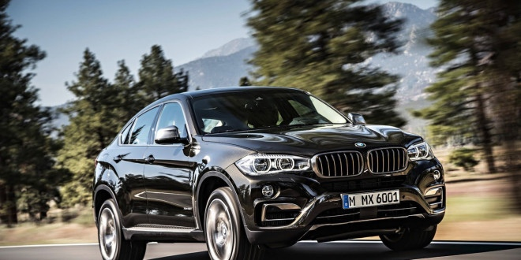
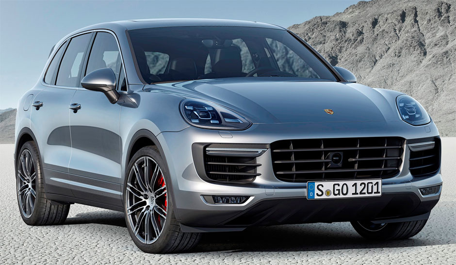

BMW X6 |
|
|  more images |
BMW X6 2014 BMW X6 (F16) M50d wagon (2015-07-14) Overview Manufacturer BMW Production 2007-present Model years 2009–present Body and chassis Body style Mid-size luxury crossover SUV Layout Front engine, four-wheel drive The BMW X6 is a mid-size luxury crossover by German automaker BMW. The first generation (E71) was released for sale in April 2008 for the 2009 model year The X6 was marketed as a Sports Activity Coupé (SAC) by BMW. It combines the attributes of an SUV (high ground clearance, all-wheel drive and all-weather ability, large wheels and tires) with the stance of a coupé (styling featuring a sloping roof). It was based on the previous generation BMW 5 and 6 Series. E71 development began in 2003 under Peter Tuennermann, after start of E70 X5 development in 2001. Design work by E70 X5 designer Pierre Leclercq was frozen in 2005, with test mules being run from the summer of 2005 and prototypes being tested from late 2006. Production began on December 3, 2007. |
|---|---|
PORSCHE CAYENNE |
|
|  more images |
BMW X6 2014 BMW X6 (F16) M50d wagon (2015-07-14) Overview Manufacturer BMW Production 2007-present Model years 2009–present Body and chassis Body style Mid-size luxury crossover SUV Layout Front engine, four-wheel drive The BMW X6 is a mid-size luxury crossover by German automaker BMW. The first generation (E71) was released for sale in April 2008 for the 2009 model year The X6 was marketed as a Sports Activity Coupé (SAC) by BMW. It combines the attributes of an SUV (high ground clearance, all-wheel drive and all-weather ability, large wheels and tires) with the stance of a coupé (styling featuring a sloping roof). It was based on the previous generation BMW 5 and 6 Series. E71 development began in 2003 under Peter Tuennermann, after start of E70 X5 development in 2001. Design work by E70 X5 designer Pierre Leclercq was frozen in 2005, with test mules being run from the summer of 2005 and prototypes being tested from late 2006. Production began on December 3, 2007. |